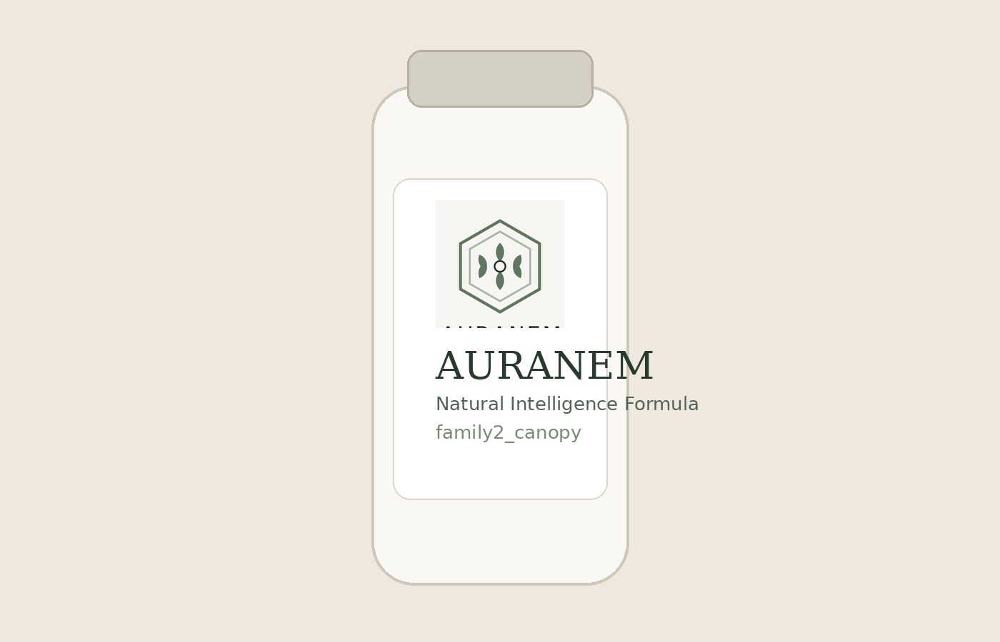

1) Setup wählen
Du entscheidest dich bewusst für Starter oder Plus statt täglich neu zu improvisieren.
Daily Balance Starter · 30 Tage
Eine klare 30-Tage-Routine für Erwachsene, die ihre tägliche Supplement-Praxis strukturiert und alltagstauglich umsetzen wollen.
In unter 60 Sekunden siehst du Inhalt, Ablauf und Preislogik — ohne Checkout-Zwang.
Atlas Seal Northstar · Chargen-Transparenz · Ohne Heilversprechen · Preis transparent vor Checkout
Du entscheidest dich bewusst für Starter oder Plus statt täglich neu zu improvisieren.
Du verknüpfst die Einnahme mit einem klaren Trigger (z. B. Frühstück), damit sie planbar wird.
Du folgst einem einfachen Wochenrhythmus mit Checkpoints statt „Neustart jeden Montag“.

Markenkennung: Atlas Seal Northstar Gewinnerzeichen als konstantes Qualitäts- und Herkunftssignal.
Empfohlen zum Start
UVP €119 ab €89*
*Launch-Preisfenster aktiv, finale Bestätigung zum Go-Live.
Für alle, die eine einfache, stabile Basisroutine für den Alltag aufbauen wollen.

Für längeren Horizont
UVP €189 ab €149*
*Launch-Preisfenster aktiv, finale Bestätigung zum Go-Live.
Für Nutzer:innen, die direkt für 8 Wochen planen und weniger Nachkauf-Reibung wollen.
Hinweis: Preisfenster wird zum Launch aktualisiert. Frühentscheidung dient Planungssicherheit, nicht künstlichem Druck.
erstmals eine feste Supplement-Routine etablieren willst und einen klaren 30-Tage-Start suchst.
schon weißt, dass du mindestens 8 Wochen durchziehen willst und Unterbrechungen vermeiden möchtest.
ein medizinisches Heilversprechen erwartest. AURANEM ist auf Routine und Eigenverantwortung ausgelegt.
Tag 1–3
Festen Einnahmezeitpunkt wählen, Erinnerung setzen, Startanleitung durchgehen.
Tag 4–10
Routine ohne Optimierungsstress halten und erste Woche vollständig abschließen.
Tag 11–20
Routine auch an busy Tagen umsetzen (Reise/Office/Wochenende).
Tag 21–30
Selbstcheck abschließen und bewusst entscheiden: Starter wiederholen oder auf Plus erweitern.
Erwartungsrahmen: Ziel ist eine verlässliche Gewohnheit. Ergebnisse hängen von individueller Lebensweise und konsequenter Anwendung ab.
Ja. Die Anwendung ist bewusst klar und ohne unnötige Komplexität aufgebaut.
Für die Einnahme selbst nur wenige Minuten. Der eigentliche Hebel ist ein fester Tagesanker.
Nein. AURANEM kommuniziert verantwortungsvoll und macht keine Heil- oder Krankheitsclaims.
Ja. Starter und Plus sind klar getrennte Optionen, damit du eine informierte Entscheidung treffen kannst.
Wähle den 30-Tage-Starter oder das 60-Tage-Plus und setze deine Routine planbar um.
Starter unverbindlich ansehen